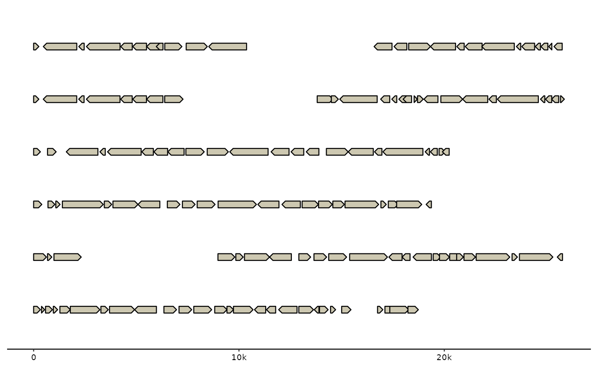
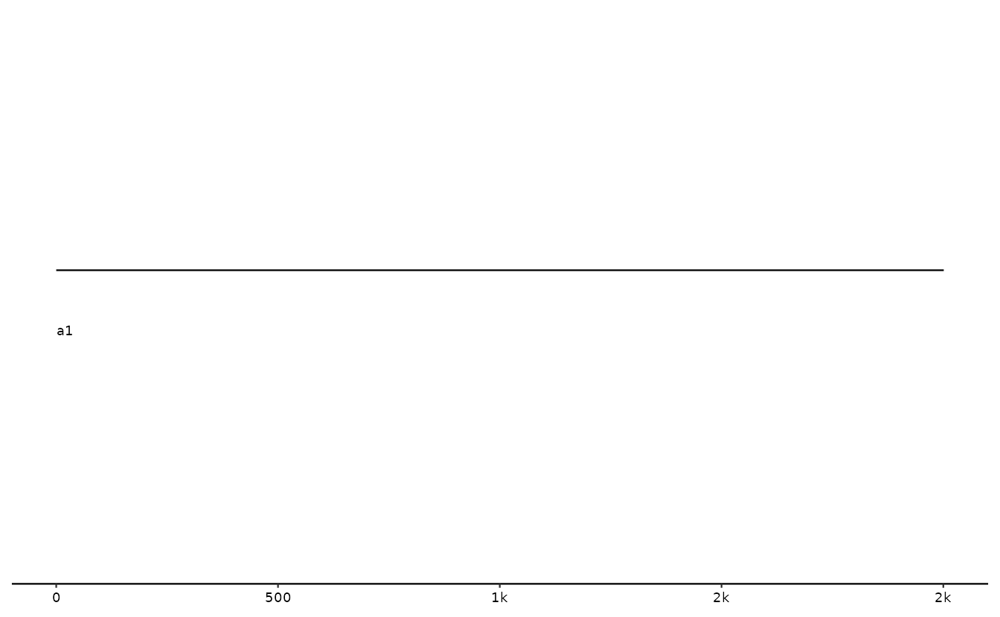
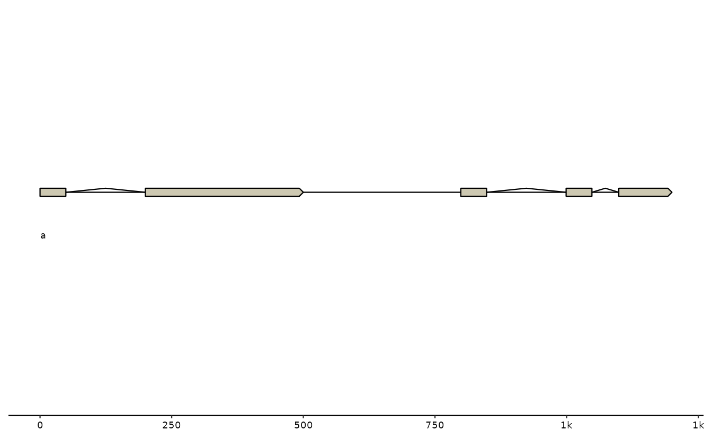
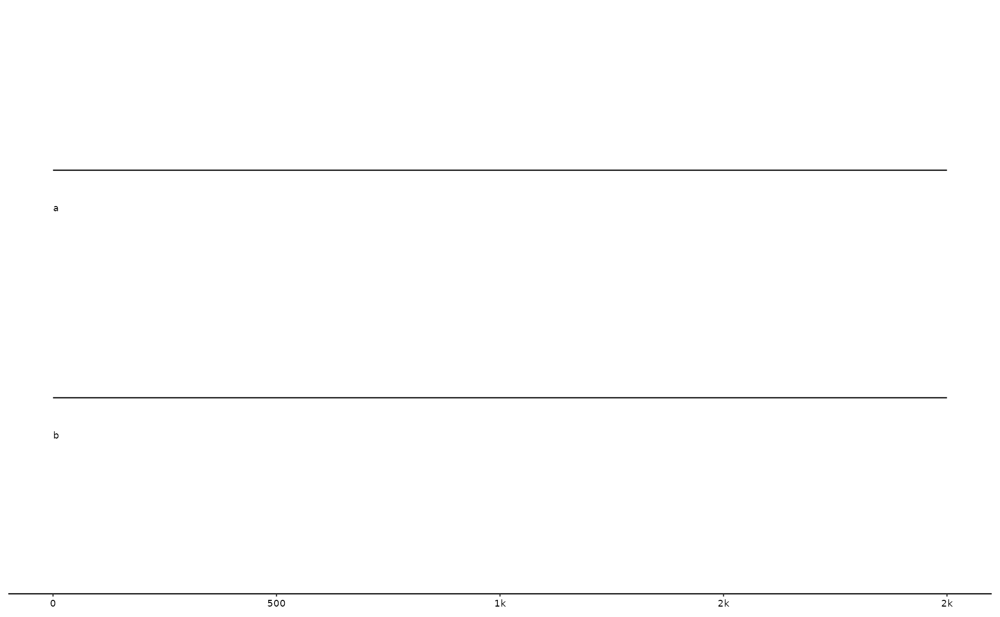

vignettes/gggenomes.Rmd
gggenomes.Rmdq— title: “gggenomes - a multi-track ggplot2 extension for comparative genomics” author: “Thomas Hackl” date: “2/23/2021” output: pdf_document —
gggenomes is an extension to ggplot2 tailored to the visualization of genomics data. It provides the same flexible approach for building up plots layer by layer, but supports the simultaneous use of multiple datasets within one plot, thereby intuitively mirroring the relational nature of most ’omics data products.
A ggplot2 is build around a single, tidy dataset with arbitrary variables and observations. x/y-plot coordinates for things to draw are computed on-the-fly using aesthetic mappings that link variables to coordinates. This setup is highly flexible and makes ggplot extremely powerful.
A gggenomes plot is build around multiple data tracks that each contain a single dataset. These datasets are linked via pre-computed global layout that determines x/y-plot coordinates prior to the actual plot construction. The reason for this more rigid setup is that genomics data are relational and there is just no good way to represent all the necessary information in a single tidy table.
gggenomes knows three types of tracks:
- seqs: sequences such as contigs or chromosomes
- feats: annotations of locations on sequences, such genes, SNPs, …
- links: annotations that connect two locations between two different sequences
There are also genes tracks, those, however are just glorified feature tracks, that sometimes get special treatment for easier usage. Internally, genes are features.
## Warning: replacing previous import 'purrr::%@%' by 'rlang::%@%' when loading
## 'gggenomes'## Warning: replacing previous import 'purrr::flatten_lgl' by 'rlang::flatten_lgl'
## when loading 'gggenomes'## Warning: replacing previous import 'purrr::splice' by 'rlang::splice' when
## loading 'gggenomes'## Warning: replacing previous import 'purrr::flatten_chr' by 'rlang::flatten_chr'
## when loading 'gggenomes'## Warning: replacing previous import 'purrr::flatten_raw' by 'rlang::flatten_raw'
## when loading 'gggenomes'## Warning: replacing previous import 'purrr::flatten' by 'rlang::flatten' when
## loading 'gggenomes'## Warning: replacing previous import 'purrr::flatten_dbl' by 'rlang::flatten_dbl'
## when loading 'gggenomes'## Warning: replacing previous import 'purrr::invoke' by 'rlang::invoke' when
## loading 'gggenomes'## Warning: replacing previous import 'purrr::flatten_int' by 'rlang::flatten_int'
## when loading 'gggenomes'
# a minimal seq track
s0 <- tibble(
seq_id = c("a", "b"),
length = c(600, 550)
)
# a minimal gene track
g0 <- tibble(
seq_id = c("a", "a", "b"),
start = c(50, 350, 80),
end = c(250, 500, 450)
)
# a simple link track
l0 <- tibble(
seq_id = c("a", "a"),
start = c(50, 400),
end = c(250, 480),
seq_id2 = c("b", "b"),
start2 = c(80, 350),
end2 = c(300, 430)
)
p <- gggenomes(genes=g0, seqs=s0, links=l0)
p +
geom_seq() + # draw contig/chromosome lines
geom_seq_label() + # label each sequence
geom_gene() + # draw genes as arrow
geom_link() # draw some connections between syntenic regions
Geoms and tracks
In a regular ggplot2, geoms read from one central dataframe. For
gggenomes, there are several tracks to read data from. To specify which
tracks to use in which geoms, gggenomes provides accessory functions
that work inside geom calls when provided to the data
argument (or outside if prefixed with pull_). The names of
these functions mirror the track types they work on and should be quite
intuitive:
-
geom_seq() : data=seqs()for the seq track -
geom_feat() : data=feats()for the first feat track not named “genes” -
geom_link() : data=links()for the first link track -
geom_gene() : data=genes()for the first feat track with some extras for geneish features (see Inside gggenomes tracks for details)
gggenomes supports an arbitrary number of feature and link tracks
within the same plot. Extra tracks can be added by either providing a
list of tracks to gggenomes(), or by using the dedicated
add_feats() / add_links() functions. The extra
tracks can then be used via the aforementioned accessory function inside
geom calls using names or positional arguments. Like most gggenomes
functions the track accessory functions use tidyverse-style non-standard
evaluation, which means you can refer to tracks either by unquoted names
or by numeric position.
# Let's use some of the bundled example data here
data(package="gggenomes")
p <- gggenomes(
genes=emale_genes, # a gene track, added as first feat track
seqs=emale_seqs, # a seq track
feats=list(emale_tirs, emale_ngaros), # multiple feat tracks
links=emale_ava # a link track
)
# inspect the tracks of the plot
p %>% track_info## # A tibble: 5 × 4
## # Groups: type [3]
## id type i n
## <chr> <chr> <int> <int>
## 1 seqs seqs 1 6
## 2 genes feats 1 143
## 3 emale_tirs feats 2 12
## 4 emale_ngaros feats 3 3
## 5 links links 1 38
# plot all tracks
p +
geom_link() + # the first link track
geom_gene() + # the first feat track filtered for geneish feats: CDS, mRNA, ..
geom_feat() + # the first feat track not named "genes", here emale_tirs
# use an extra feat track by name
geom_feat(data=feats(emale_ngaros), color="plum3")
One layout to rule them all
gggenomes multi-track setup has both pros and cons. For example,
communicating information between tracks during plot construction is not
supported by ggplot2, because - well - it’s been designed to work with a
single table. gggenomes works around that by pre-computing a
layout, and adding coordinates (y,x,xend) to each
dataframe prior to the actual plot construction. This has some
implications for the usage of gggenomes:
-
Dataframes for tracks have required variables,
e.g.
seq_id,start,endfor features. These predefined variables are used during import to compute x/y coordinates (see Inside gggenomes tracks for more details). -
gggenomes geoms can often be used without explicit
aes()mappings - a rather convenient upside of the multi-track setup. This works because we always know the names of the plot variables ahead of time: they originate from the pre-computed layout, and we can use that information to set sensible default aesthetic mappings for most cases.
# inspect seqs track with layout vars - note y,x,xend
p %>% pull_seqs## # A tibble: 6 × 12
## # Groups: bin_id [6]
## y x xend strand seq_id bin_id length bin_offset start end file_id
## <int> <dbl> <dbl> <chr> <chr> <chr> <int> <dbl> <dbl> <int> <chr>
## 1 6 0 20152 + RCC970_… RCC97… 20152 0 1 20152 emales
## 2 5 0 20642 + E4-10_0… E4-10… 20642 0 1 20642 emales
## 3 4 0 21311 + Cflag_0… Cflag… 21311 0 1 21311 emales
## 4 3 0 26808 + BVI_069 BVI_0… 26808 0 1 26808 emales
## 5 2 0 26820 + BVI_008A BVI_0… 26820 0 1 26820 emales
## 6 1 0 26856 + E4-10_1… E4-10… 26856 0 1 26856 emales
## # ℹ 1 more variable: seq_desc <chr>
# inspect genes track with layout vars - note y,x,xend, but also other
# columns such as strand, feat_id or type, that are added automatically
p %>% pull_genes## # A tibble: 143 × 22
## y x xend bin_id seq_id start end file_id strand type feat_id
## <int> <dbl> <dbl> <chr> <chr> <int> <int> <chr> <chr> <chr> <chr>
## 1 2 567 822 BVI_008A BVI_008A 568 822 emales + CDS BVI_008…
## 2 2 2668 1039 BVI_008A BVI_008A 1040 2668 emales - CDS BVI_008…
## 3 2 3028 2767 BVI_008A BVI_008A 2768 3028 emales - CDS BVI_008…
## 4 2 4776 3138 BVI_008A BVI_008A 3139 4776 emales - CDS BVI_008…
## 5 2 5370 4809 BVI_008A BVI_008A 4810 5370 emales - CDS BVI_008…
## 6 2 6065 5396 BVI_008A BVI_008A 5397 6065 emales - CDS BVI_008…
## 7 2 6683 6074 BVI_008A BVI_008A 6075 6683 emales - CDS BVI_008…
## 8 2 6867 6540 BVI_008A BVI_008A 6541 6867 emales - CDS BVI_008…
## 9 2 6954 7788 BVI_008A BVI_008A 6955 7788 emales + CDS BVI_008…
## 10 2 7997 9026 BVI_008A BVI_008A 7998 9026 emales + CDS BVI_008…
## # ℹ 133 more rows
## # ℹ 11 more variables: introns <list>, parent_ids <list>, source <chr>,
## # score <chr>, phase <int>, width <chr>, gc_content <chr>, name <chr>,
## # Note <chr>, geom_id <chr>, .marginal <lgl>Plotting from scratch
The minimum requirement to create a gggenomes plot is a single track. It can be of any of the three types: seqs, feats or links.
If there is no a sequence track, a sequence track is inferred from the data simply by assuming that each sequence that a feature or link maps onto must exist, and that it must be long enough to accommodate all its associated features and links (note the corresponding log message below).
Note also, that unless sequence information is explicitly provided,
gggenomes will zoom in on only the regions that are covered with
features. That may appear odd at first, but it is a) consistent in the
sense that for inferred sequence we only know the start
(x=1) anyway, and have to guess the end from the last
feature, and b) it is very convenient if we deal with real data: It
usually makes no sense to plot all 5000 genes of a bacterial genome. In
most cases we will want to focus on specific regions.
# some genes
g0 <- tibble(
seq_id = c("a", "a", "b"),
start = c(50, 350, 80),
end = c(250, 500, 450)
)
p <- gggenomes(g0) ## No seqs provided, inferring seqs from feats
p +
geom_seq() + # draw contig/chromosome lines
geom_seq_label() + # label each sequence
geom_gene() # draw genes as arrow## Only saw `type=NA` in genes and will treat everything as `type="CDS"`.Plotting from files
Plotting from scratch is fun, but likely not the typical use-case.
Usually you will have files with data that you want to import. gggenomes
provides a bunch of read_* functions that help you do that
for several common bioinformatics file formats. Moreover, gggenomes come
with a set of higher-level convenience read functions that perfectly
integrate with its track system.
What I mean by that is that instead of reading a certain file format
explicitly, such as read_gff3("foo.gff"), you can invoke
the generic read_feats("foo.gff") function to read features
from various file formats. File formats are automatically recognized, so
this, for example, also works read_feats("foo.bed"). And
you can read different information from the same file:
read_seqs("foo.gff") will retrieve sequence information
from the gff3 file instead of gene/feature coordinates.
That said, the only real requirement for any data you want to plot is that it is in a somewhat tidy table, and that it has some of the required variables (see below). Even if you have data that is not directly supported by gggenomes read functions, it should be very easy to convert your data into a table that works with gggenomes.
# note: ex() is just a helper to get stable paths to gggenomes example data
s0 <- read_seqs(ex("emales/emales.fna"))
g0 <- read_feats(ex("emales/emales.gff"))
gggenomes(g0, s0) +
geom_seq() + geom_gene()

# and really fancy: multiple remote files, all at once
gbk_phages <- c(
PSSP7 = "ftp://ftp.ncbi.nlm.nih.gov/genomes/all/GCF/000/858/745/GCF_000858745.1_ViralProj15134/GCF_000858745.1_ViralProj15134_genomic.gff.gz",
PSSP3 = "ftp://ftp.ncbi.nlm.nih.gov/genomes/all/GCF/000/904/555/GCF_000904555.1_ViralProj195517/GCF_000904555.1_ViralProj195517_genomic.gff.gz")
gggenomes(gbk_phages) + geom_gene() +
geom_seq_label()
Inside gggenomes tracks
As mentioned before, tracks have required columns and optional columns, which can have additional meaning in the context of the plot.
seqs: sequences such as contigs or chromosomes
- required:
seq_id,length - recognized:
bin_id,start,end,strand
feats: such as genes, SNPs, repeats, …
- required:
seq_id,start,end - recognized:
strand,bin_id,feat_id,introns
links: connections between two locations from different sequences
- required:
seq_id,seq_id2 - recognized:
start,end,bin_id,start2,end2,bin_id2,strand
Sequence track - there can be only one
seq_id,length are the required
variables and should be quite self-explanatory. It’s highly recommended
(and might become compulsory in the future) for seq_ids to
be unique within the entire data set.
The optional column for seqs are:
bin_id to denote bins
representing genomes or assemblies with multiple chromosomes or contigs.
Sequences from the same bin are drawn next to each other in the default
layout, as opposed to sequence from different bins which will occupy
different rows. If omitted, the default is to set
bin_id=seq_id, which means, every sequence gets its own
row.
# seq track: one entry per sequence
s0 <- tibble(
bin_id = c("A", "A", "B"),
seq_id = c("a1","a2","b1"),
length = c(2e5, 3e5, 5e5)
)
p <- gggenomes(seqs=s0)
p +
geom_seq() + # draw contig/chromosome lines
geom_seq_label() + # label each sequence
geom_bin_label() # label each bin
start,end,strand in the context of a
sequence denote a region or locus on that
sequence. If provided, only the part of the sequence within the locus
boundaries will be shown in the plot. This also will remove any features
from the plot that do not fall within the locus. It’s likely rare to one
wants to specify these information directly, but they are important as
they power manipulation functions such as focus().
# zoom in on a longer sequence - note the scale on the x-axis
s0 <- tibble(
seq_id = "a1",
length = 10000,
start = 1000,
end = 3000
)
gggenomes(seqs=s0) + geom_seq() + geom_seq_label()
Feature tracks - what maps onto sequences
Again, the required variables seq_id,start,end should be
self-explainatory. Note though, that features with seq_ids
not present in the seq track will be silently ignored.
Also note that gggenomes uses 1-based, inclusive ranges to denote feature start/end coordinates. It’s the same system as used by GFF, GenBank, BLAST or SAM, for example. In contrast, BED and BAM, for example, use 0-based, exclusive ranges. Something to keep in mind when importing data from those formats.
The optional columns for features are:
strand to denote the orientation of a
feature relative to the sequences it maps to. The default way of
specifying the strand is with a character vector with
"+/-/." coding for forward, reverse and
undetermined. Logical (TRUE/FALSE/NA) or numeric
vectors (1/-1/0) are supported as well.
bin_id works as for seqs. The
assignment of bin_ids to features is usually only useful,
if no sequences are provided. Otherwise, bin information is inherited
from the sequences.
feat_id is a unique ID for each
feature. These IDs are useful if we want to add data to a plot that
pertains to features and not sequences. For example, we can add the
results of a protein blast search to the genes the proteins derived from
if by matching blast results and feature annotations using the
feat_id. If not provided, they will be automatically
generated.
Special variables for complex gene models:
introns is a special column that can
contain a list of numeric vectors that denote intron start and end
coordinates within a given feature. The support of introns is something
I just very recently added. It’s still experimental and some of the
handling might change in future versions.
# some genes
g0 <- tibble(
seq_id = c("a"),
start = c(1, 800),
end = c(500, 1200),
# NOTE: introns need to be a list-column!
introns = list(c(50,200), c(50,200,250,300))
)
gggenomes(g0) +
geom_seq() + # draw contig/chromosome lines
geom_seq_label() + # label each sequence
geom_gene() # draw genes as arrow## No seqs provided, inferring seqs from feats
## Only saw `type=NA` in genes and will treat everything as `type="CDS"`.
Link tracks - show me the synteny
The link track connects loci/regions on two adjacent
sequences/genomes with one another. seq_id, seq_id2 are
the required variables for the link track. Once again, links with
seq_ids not present in the sequence (seq)
track will be silently ignored.
To correctly link specific loci/regions between sequences with one
another, it is also highly recommend to use the following optional
variables: (Without the variables, start,
start2,endandend2`, links will be made between
two entire sequences/contigs and not between two specific
loci/regions.)
start, start2 indicates
the starting position of the loci/region that will be linked between
respectively the first sequence (seq_id) and the second sequence
(seq_id2). Note that links can and will only be created between
adjacent sequences.
end, end2 similar to
start and start2, but now indicates the end of
the loci/region that will be linked. Once again respectively for seq_id
and seq_id2.
bin_id, bin_id2 works as
for seqs. The assignment of bin_ids to features is usually
only useful, if no sequences are provided. Otherwise, bin information is
inherited from the sequences.
strand, works as for feats.
strand denotes the orientation of the link relative to each
of the two sequences. If abscent, the orientation is derived from the
start and end positions.
# some links
l0 <- tibble(
seq_id = c("a", "a", "a"),
start = c(200, 801, 1600),
end = c(550, 1300, 1800),
seq_id2 = c("b", "b", "b"),
start2 = c(1100, 1, 1800),
end2 = c(1450, 500, 1600)
)
# corresponding sequences
s1 <- tibble(
seq_id = c("a", "b"),
length = c(2000, 2000),
start = c(1, 1),
end = c(2000, 2000)
)
gggenomes(seqs=s1, links=l0) +
geom_seq() + # draws contigs/chromosome lines
geom_seq_label() + # labels each sequence
geom_link(offset = 0.05) # draws links between contigs